Newtons gravitasjonslov
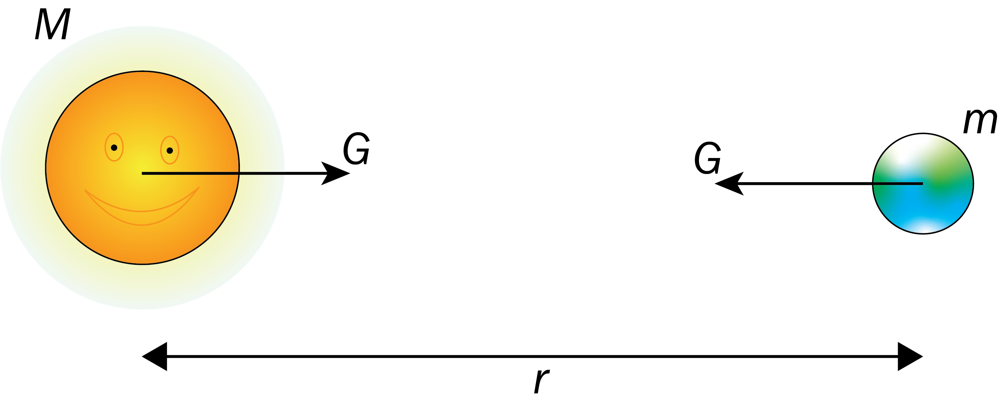
Newtons gravitasjonslov sier at to masser \(M\) og \(m\) tiltrekker hverandre med kraften
\[ G = \gamma \cdot \frac{Mm}{r^2} \]hvor \(\gamma = 6\text{,}67 \cdot 10^{-11} \text{ Nm}^2/\text{kg}^2\) er en naturkonstant (gravitasjonskonstanten) og \(r\) er avstanden mellom sentrum av massene.
I engelsk litteratur er det vanlig å bruke \(F\), og så er det vanlig å bruke \(G\) istedenfor \(\gamma\) som symbol for gravitasjonskonstanten. Dette er kanskje forvirrende, men vanskelig å gjøre noe med...
Eksempel
Gravitasjonskraften på en asteroide er 10 kN når den er ved jordoverflaten.
Jordas radius er \(R = 6371 \) km og jordas masse er \(M = 5\text{,}97 \cdot 10^{24}\) kg.
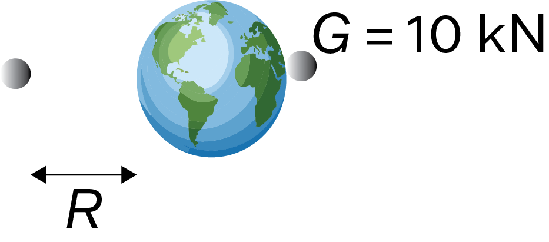
Hvor stor er gravitasjonskraften på asteroiden når den er \(R = 6371 \) km over jordoverflaten?
Vi kan løse dette ved å først finne massen til asteroiden, \[ G = \gamma \frac{Mm}{r^2} \;\;\; \Rightarrow \;\;\; m = \frac{G \cdot r^2}{\gamma \cdot M} = \frac{10 \cdot 10^3 \cdot \left(6371 \cdot 10^3\right)^2}{6\text{,}67 \cdot 10^{-11} \cdot 5\text{,}97 \cdot 10^{24}} = 1019 \text{ kg}\] Deretter kan vi regne ut gravtiasjonskraften: \[ G = \gamma \frac{Mm}{r^2} = 6\text{,}67 \cdot 10^{-11} \cdot \frac{5\text{,}97 \cdot 10^{24} \cdot 1019}{\left(2 \cdot 6371 \cdot 10^3\right)^2} = 2500 = 2\text{,}5 \text{ kN} \]
Metode 2:
Vi kan løse dette ved å se på hva som skjer med formelen for gravitasjonskraft når \(R \rightarrow 2R\): \[ G = \gamma \frac{Mm}{R^2} \;\;\;\rightarrow\;\;\; \gamma \frac{Mm}{(2R)^2} = \gamma \frac{Mm}{4R^2} = \frac{1}{4} \cdot \gamma \frac{Mm}{R^2} \] Vi ser at gravitasjonskraften blir 1/4 når avstanden til sentrum av jorda dobles, altså at \[ G_{2R} = \frac{G_R}{4} = \frac{10 \text{ kN}}{4} = 2\text{,}5 \text{ kN}\]
Hvis vi skal gjøre beregninger med bevegelsen av noe som faller mot jorda, må vi ofte programmere, siden gravitasjonskraften endrer seg; Vi får en ikke-konstant akselerasjon.
Eksempel
Jordas radius er \(R = 6371 \) km og jordas masse er \(M = 5\text{,}97 \cdot 10^{24}\) kg.
Månens radius er \(r = 1737 \) km og månens masse er \(m = 7\text{,}35 \cdot 10^{22}\) kg.
Avstanden mellom månen og jorda er 384 000 km.
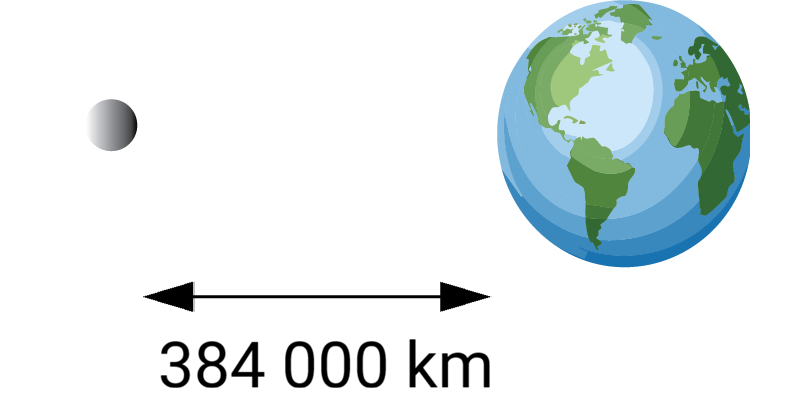
Bestem hvor lang tid månen bruker på å falle mot jorda hvis den stopper opp. Anta at jorda er i ro.
M, m = 5.97E24, 7.35E22 # Massen til jorda og månen
R, r = 6371E3, 1737E3 # Radiusen til jorda og månen
x = 384000E3 # Startavstand
v = 0
t = 0
dt = 1
while x > R + r:
F = 6.67E-11*M*m/x**2 # Newtons gravitasjonslov
a = F/m
v = v + a*dt
x = x - v*dt
t = t + dt
print(t, "sekunder")
print(t/(60*60*24), "dager")
Sirkulær satellittbane
Grunnen til at månen ikke faller ned på jorda, er at den har en fart (nesten) vinkelrett på gravitasjonskraften, noe som gjør at den (nesten) går i en sirkelbane.
Når en liten masse \(m\) går i sirkelbane rundt en større masse \(M\), er sammenhengen mellom massene, baneradius \(r,\) og banefart gitt ved \[ G = \gamma \frac{Mm}{r^2} = \frac{mv^2}{r} \] For å beskrive satellittbaner gjorde Newton følgende tankeeksperiment: Han tenkte seg at en kanonkule ble skutt horisontalt ut fra et høyt fjell. Med økende fart vil den gå lenger og lenger. Og med nok fart vil den falle rundt hele jorda.
Tid: 0 s
Hastighet: 0 m/s
Høyde: 350 km
Eksempel
Jordas radius er \(R = 6371 \) km og jordas masse er \(M = 5\text{,}97 \cdot 10^{24}\) kg.
Bildet viser den internasjonale romstasjonen (ISS), som går i en sirkelbane 350 km over jordoverflata (bildet er hentet fra European Space Agency, esa.int).
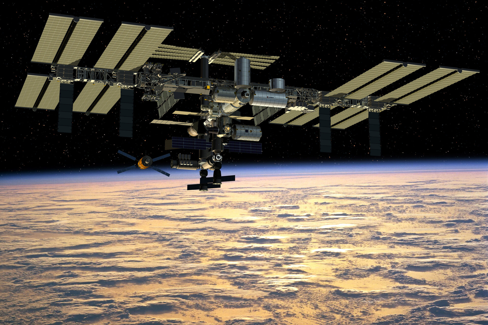
Bestem farten til ISS.
Eksempel
Jordas masse er \(M = 5\text{,}97 \cdot 10^{24}\) kg, og avstanden mellom månen og jorda er 384 000 km.
Bestem omløpstiden til månen.
Eksempel
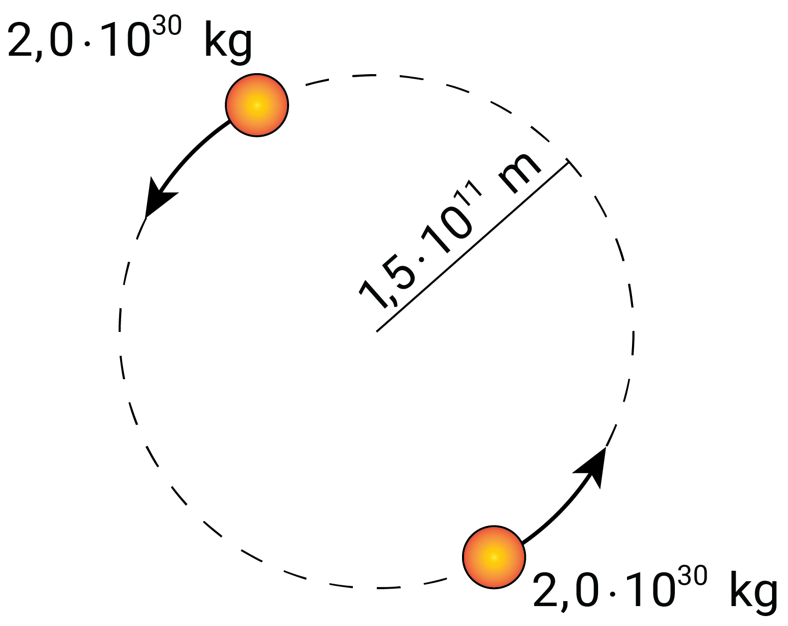
Bestem banefarten til to stjerner som går i sirkelbane rundt et felles massesenter, slik figuren viser.
Det er bare når den ene massen er mye mindre enn den andre at baneradien og avstanden er (omtrent) det samme.
Gravitasjonsfelt
Gravitasjonsfeltet i en avstand \(r\) fra en masse \(M\) er \( g = \frac{G}{m} = \gamma \frac{M}{r^2} \).
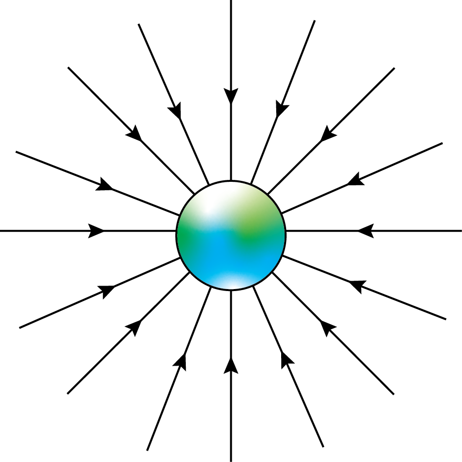
Gravitasjonsfeltet peker inn mot sentrum av massen \(M\), og viser hvilken vei en masse \(m\) blir akselerert hvis den plasseres i feltet.Eksempel
Jordas radius er \(R = 6371 \) km og jordas masse er \(M = 5\text{,}97 \cdot 10^{24}\) kg.
Den internasjonale romstasjonen er 350 km over jordoverflata (bildet er hentet fra European Space Agancy, esa.int).
Bestem gravitasjonsfeltstyrken ved jordoverflaten og gravitasjonsfeltstyrken ved ISS.
Likevel er astronautene vektløse i romstasjonen; Det er fordi de faller (rundt jorda); De er vektløse, akkurat som at du er vektløs når du hopper fra 5-meteren i svømmehallen.
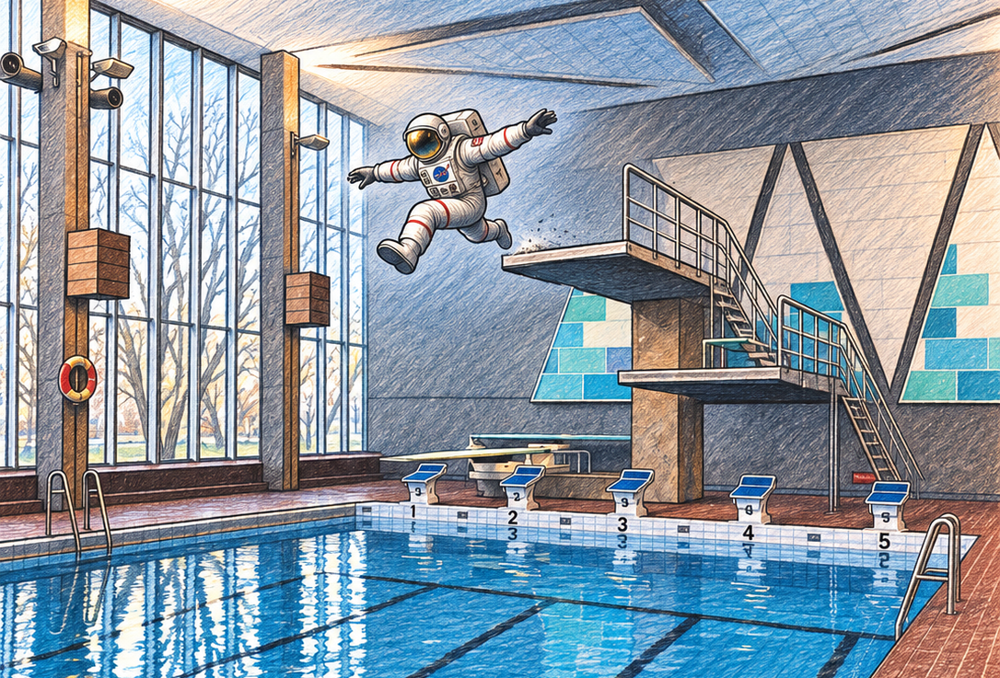
Mekanisk energi
I en satellittbane, eller i en "kastbevegelse" i verdensrommet, er den mekaniske energien bevart. Nær jordoverflaten bruker vi \[ \frac{1}{2}mv_0^2 + mgh_0 = \frac{1}{2} mv^2 + mgh \] hvor vi setter \(h=0\) ved jordoverflaten. For store høyder må vi ta hensyn til at \(g\) endrer verdi. Vi må da bruke \[ \frac{1}{2}mv_0^2 - \gamma \frac{Mm}{r_0} = \frac{1}{2} mv^2 - \gamma \frac{Mm}{r} \] hvor \(r = 0\) er i sentrum av himmellegemet (f.eks. jorda).
Simuleringen nedenfor viser hvordan formelen over gir at avstand og fart endrer seg når noe "faller"/"kastes" rundt jorda.
Tid: 0 s
Hastighet: 0 m/s
Høyde: 0 km
Eksempel
En gjenstand går i en ellipsebane rundt jorda.
Når den er på sitt nærmeste er den 500 km over jordoverflaten, og har en fart på 9,0 km/s.
Når den er i punktet lengst fra jorda er den 9520 km over jordoverflaten.
Hva er den minste farten gjenstanden har?
Unnslipningshastigheten: Farten noe må ha for så vidt å komme fri fra gravitasjonsfeltet.
Eksempel
En gjenstand skytes ut fra overflaten til jorda.
Hvor stor startfart må gjenstanden ha for å slippe fri fra jordas gravitasjonsfelt?
(Hva er unnslipningshastigheten fra overflaten av jorda?)
Utledning av uttrykket for potensiell energi:
Den potensielle energien i et punkt er arbeidet gravitasjonen gjør på gjenstanden hvis vi flytter den uendelig langt bort:
\[ E_p = W = F \cdot s \]
Siden kraften \(F\) endrer seg, må vi integrere (som betyr å summere arbeidet over små intervaller):
\[ \begin{align}
E_p = W = &\int^{\infty}_r \left( - \gamma \frac{Mm}{x^2}\right) \, dx\\
= - &\int^{\infty}_r \gamma Mm \cdot x^{-2} \, dx
=\left[ \gamma Mm \cdot x^{-1}\right]^{\infty}_r = \left[ \gamma \frac{Mm}{x}\right]^{\infty}_0 = \gamma \frac{Mm}{\infty} - \gamma \frac{Mm}{r} = -\gamma \frac{Mm}{r}
\end{align}
\]
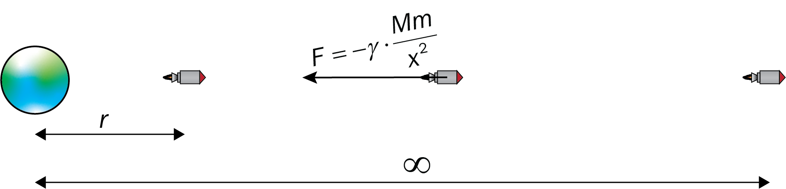
Einsteins gravitasjonsteori (Generell relativitetsteori, GRT)
Ifølge Einsteins gravitasjonsteori (GRT) virker det ikke gravitasjonskrefter, men masser krummer rommet og tiden.
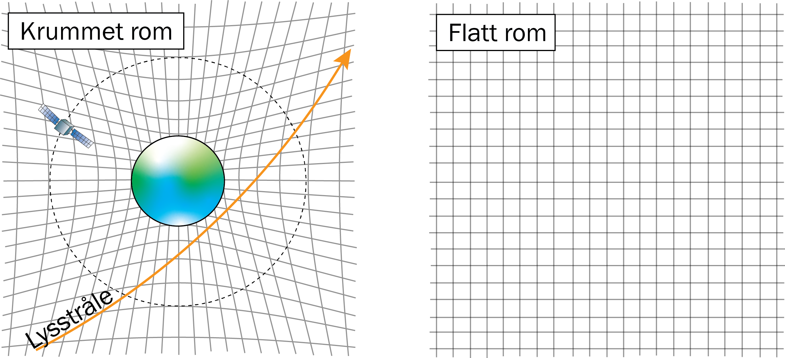
Ifølge GRT går ikke en satellitt i bane rundt jorda på grunn av en kraft, men på grunn av en "grop" i rommet.
Ekvivalensprinsippet: Gravitasjon og akselerasjon ekvivalente på liten skala.
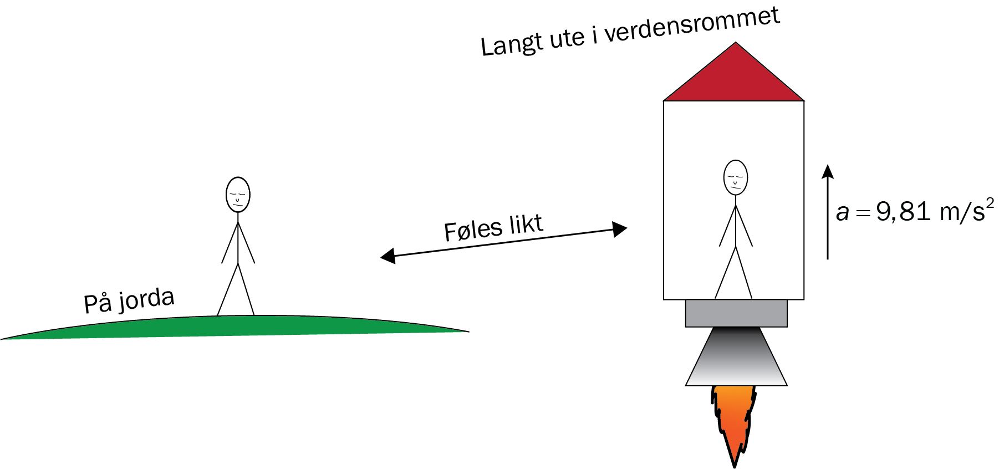
Når vi står på jorda kjenner vi normalkraften dytte oss opp. Dette kjennes helt likt ut som å stå i en rakett langt ute i verdensrommet, som akselererer med 9,81 m/s\(^2\).Tid i gravitasjonsfelt: Frekvensen \(f\) til en lysbølge er antall bølgetopper per sekund. Sammenhengen mellom frekvens \(f\) og tid \(T\) (periode) mellom hver bølgetopp er \[ f = \frac{1}{T}\] Når lys sendes nedover i et gravitasjonsfelt øker frekvensen \(f\) (fordi det er som om at bakken akselererer oppover), og dermed minker tiden \(T\) mellom hver bølgetopp. Fordi lysfarten ikke endres, betyr dette at tiden går saktere nede i et gravitasjonsfelt. \[ f_0 > f \;\;\; \Rightarrow \;\;\; T_0 < T \;,\;\;\; \text{ hvor \(f_0\) og \(T_0\) er nederst i gravitasjonsfeltet.} \]
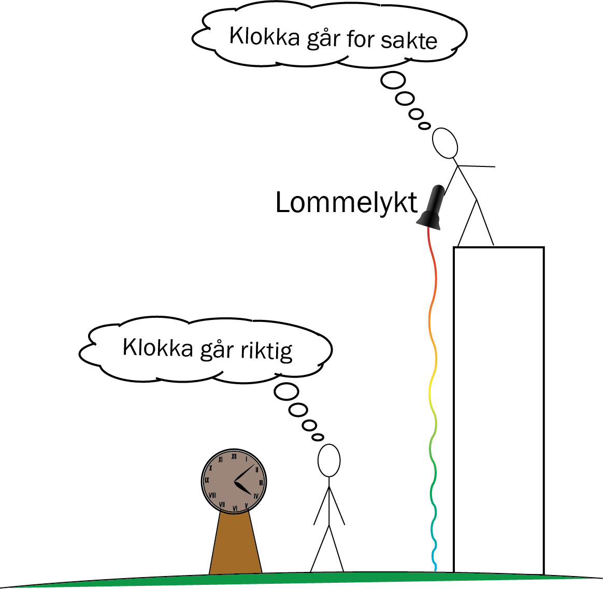
Over korte avstander, hvor \(g \approx \) konstant, er sammenhengen mellom tiden \(t_0\) nede i et gravitasjonfelt, og tiden \(t\) i en høyde \(h\), gitt ved \[ t \approx \frac{t_0}{\sqrt{1 - \frac{2gh}{c^2}}}\] Over større avstander er sammenhengen mellom tiden \(t_0\) og tiden \(t\) gitt ved \[ t \approx t_0\left(1+\frac{\gamma M}{c^2}\left(\frac{1}{r_0}-\frac{1}{r}\right)\right) \] hvor \(r_0\) og \(r\) er avstandene fra sentrum av himmellegemet.I de aller fleste praktiske situasjoner er \(t_0 \approx t\), men det finnes tilfeller hvor vi formlene over gir en betydelig forskjell mellom \(t_0\) og \(t\).
Eksempel
Hvor lang tid har det gått på toppen av Mount Everest når det har gått (nøyaktig) ett år ved havet?
Eksempel
GPS-satellitter beveger seg med en fart 4000 m/s i en høyde 20 000 km over jordoverflaten.
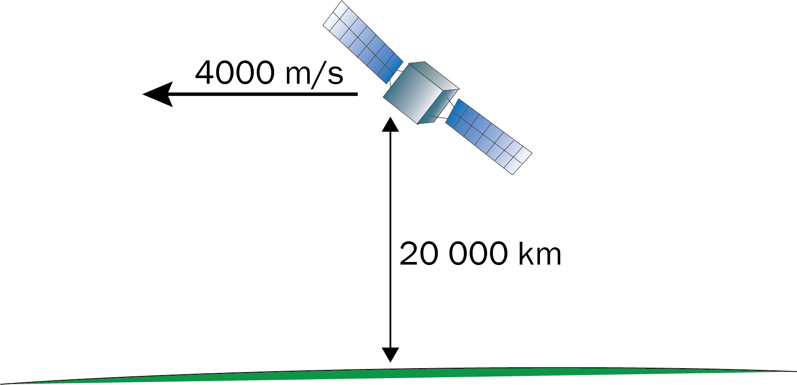
Hvor stor blir tidsdifferansen i løpet av et år mellom en klokke på jorda og en klokke i en GPS-satellitt?- Generell relativitetsteori: Klokkene går raskere i GPS-satellittene
- Spesiell relativitetsteori: Klokkene går saktere i GPS-satellittene (observert fra jorda)
- I starten av filmen reiser Cooper fra datteren sin Murph.
- På slutten av filmen kommer Cooper tilbake til jorda. Murph er da mye eldre enn faren sin.
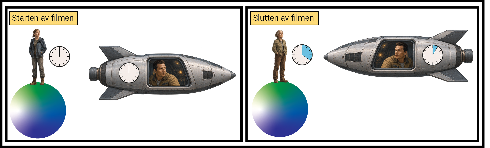
Tiden går saktere for Cooper både fordi han reiser raskt (spesiell relativitetsteori) og fordi han oppholder seg i nærheten av et sort hull, med et sterkt gravitasjonsfelt (generell relativitetsteori).